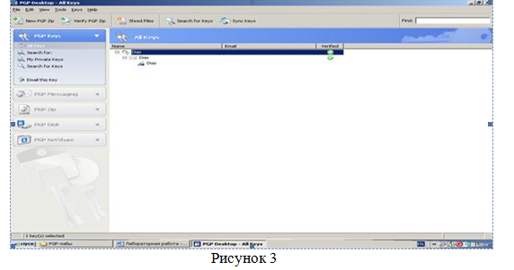
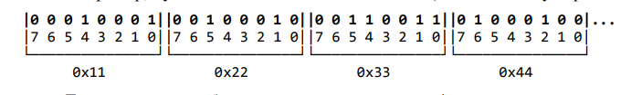

Настройка средств защиты
1. УКАЗАНИЯ К ВЫПОЛНЕНИЮ РАБОТЫ:
1.1. ЗАДАНИЕ:
• Изучить теоретические сведения.
• Изучить задания на лабораторную работу.
• Выполнить их.
• Оформить отчет.
• Выполнить контрольное задание.
• Ответить на контрольные вопросы.
2. МЕТОДИЧЕСКИЕ УКАЗАНИЯ ДЛЯ СТУДЕНТОВ К РАБОТЕ:
2.1. ТЕОРЕТИЧЕСКИЕ СВЕДЕНИЯ:
Защита информации от копирования.
Защита от копирования заключается в предупреждении возможностей несанкционированного снятия копии с информации, находящейся в ОЗУ компьютера или на магнитном диске. Под системой защиты программы от копирования понимается система, которая обеспечивает выполнение ею своих функций только при опознании некоторого уникального, не поддающегося копированию элемента, называемого ключевым. В качестве ключевого элемента могут выступать дискета, определенная часть аппаратуры ПК или специальное устройство, подключаемое к ПК.
Для защиты от несанкционированного входа в персональную компьютерную систему могут использоваться как общесистемные, так и специализированные программные средства защиты. К общесистемным средствам относится утилита Setup, входящая в состав BIOS и предназначенная для настроек аппаратных параметров компьютера. Для реализации рассматриваемого вида защиты необходимо с помощью данной утилиты установить следующие параметры загрузки компьютера:
порядок загрузки ОС, задающий первичную загрузку с жесткого диска (устройство С);
запрос пароля перед загрузкой ОС.
Защита информации от несанкционированного доступа к компьютеру при его оставлении без завершения сеанса работы.
В ряде случаев в процессе работы пользователя за компьютером может возникнуть необходимость кратковременно оставить компьютер без присмотра, не завершая при этом сеанс работы. Для предотвращения несанкционированного доступа к компьютерной системе перед оставлением компьютера необходимо либо завершить сеанс работы, либо заблокировать клавиатуру, мышь и экран до активизации процесса подтверждения подлинности. Кроме того, должна быть предусмотрена возможность автоматического блокирования клавиатуры, мыши и экрана по истечении заданного времени бездействия пользователя.
Создание пароля пользователя
Использование пароля повышает уровень безопасности компьютера. Если на компьютере работают несколько пользователей, ваши личные настройки, программы и системные ресурсы будут лучше защищены, если вашему имени для входа или имени учетной записи пользователя назначен пароль.
Учетная запись пользователя определяет, какие действия пользователь может производить в Windows. На автономном компьютере или на компьютере, входящем в рабочую группу, учетная запись пользователя устанавливает полномочия каждого пользователя. На компьютере, являющимся частью сетевого домена пользователь должен входить по крайней мере в одну группу. Разрешения и права, предоставленные группе, распространяются и на ее членов.
Существует два типа учетных записей пользователей, доступных на компьютере: учетная запись администратора компьютера и учетная запись с ограниченными правами. Учетная запись гостя доступна для пользователей, не имеющих собственных учетных записей на компьютере.
Ход работы:
Задание № 1:
1. Запустить утилиту Setup, нажав клавишу Del сразу после включения компьютера или перезапуска.
2. После запуска утилиты войти в пункт меню “BIOS Features Setup” (“Advanced CMOS Setup”) и с помощью клавиш PgUp и PgDn установить следующие переключатели:
“Boot Sequence” (“System Boot Up Sequence”) – в положение “C, A”;
“Security Option” (“Password Checking Options”) – в положение “System”.
3. Задать пароль входа в систему с помощью пункта меню “Password
Setting” (“Change Password”), затем сохранить сделанные изменения и выйти из утилиты с помощью пункта меню “Save & Exit Setup”.
4. Проверить установленную защиту , перезагрузив компьютер.
Задание № 2:
Защита в среде MS-DOS
1. Для защиты от несанкционированного доступа к компьютеру в среде MS-DOS можно воспользоваться утилитой Diskreet, входящей в состав пакета Norton Utility 7-й или 8-й версий. Для этого необходимо:
подключить драйвер Diskreet.sys: включить в файл Config.sys строку DEVICE = с:\path\DISKREET.SYS, где с и path – соответственно логический привод и путь файла Diskreet.sys;
перезагрузить ОС;
запустить утилиту Diskreet.exe;
войти в меню, нажав клавишу F10;
в пункте Options ввести команду Driver;
раскрыть список “Hot key” c помощью комбинации клавиш и выбрать комбинацию клавиш для блокирования клавиатуры, мыши и экрана;
установить нажатием клавиши пробела флажок Keyboard/Screen Lock и нажать Ок;
используя команду Master Password из пункта меню Options, ввести главный пароль и выйти из утилиты.
Защита в среде Windows
2. Установка параметров защиты от несанкционированного доступа к компьютеру при его оставлении без завершения сеанса работы для ОС Windows 95/98/NT выполняется следующими действиями:
активизировать Панель управления Windows 95/98/NT и запустить программный компонент Экран или щелкнув правой кнопкой мыши в окне Рабочего стола выбрать пункт контекстного меню Свойства: Экран;
выбрать закладку свойств «Заставка» и выбрать понравившийся хранитель экрана;
установить в поле Интервал требуемое время бездействия пользователя, по истечении которого будет активизироваться хранитель экрана (рекомендуется для данной проверки 1 мин.);
установить флажок Пароль;
определить пароль с помощью кнопки Изменить и подтвердить нажатием кнопок Применить и Ок.
Задание 3.
Компонент «Учетные записи пользователей» находится на панели управления.
1. Чтобы открыть компонент «Учетные записи», нажмите кнопку Пуск, выберите команды
Настройка и Панель управления.
2. Щелкните значок Учетные записи пользователей.
3. Выберите задание «Создание учетной записи».
4. Выполните шаги мастера «Создание учетной записи», нажимая на кнопку Далее.
5. Откройте компонент «Учетные записи пользователей».
6. Выберите имя своей учетной записи.
7. Щелкните ссылку Создать пароль.
8. Введите пароль учетной записи в поля Введите новый пароль и Введите пароль для подтверждения.
Чтобы легче вспомнить пароль, если он будет забыт, введите текст в поле Введите слово или фразу, служащую подсказкой о пароле.
9. Нажмите кнопку Создать пароль.
10. Чтобы включить или выключить экран приветствия выберите ссылку Сменить способ входа и выхода из системы.
11. Выполните одно из следующих действий:
o Чтобы задать вход пользователей на компьютер через экран приветствия, установите флажок Использовать экран приветствия.
Пользователи будут входить на компьютер, щелкнув имя своей учетной записи на экране приветствия. Если учетной записи назначен пароль, то пользователю будет предложено ввести его.
o Чтобы задать вход пользователей на компьютер без использования экрана приветствия, снимите флажок Использовать экран приветствия.
Экран приветствия больше не будет появляться при запуске компьютера. Для входа в систему необходимо ввести имя пользователя (и пароль, если есть) в стандартном диалоговом окне Вход в Windows.
12. Перезагрузите компьютер и проверьте использование своей учетной записи.
Контрольные вопросы:
1. Каковы отличительные особенности персонального компьютера как объекта защиты?
2. Что значит разграничение и контроль доступа к информации?
3. Что понимается под идентификацией и установлением подлинности субъекта (объекта)?
4. Какие имеются программные методы и средства защиты информации от несанкционированных воздействий?
5. Обеспечивается ли в среде MS-DOS при использовании общесистемных средств защиты блокировка аппаратуры при отсутствии признаков активности пользователя?
6. В чем недостаток хранителей экрана в ОС Windows?
Применение ключей безопасности
Актуальность темы объясняется основными вопросами знания в области
защиты информации в РФ.
Теоретическая часть
Защита информации - деятельность по предотвращению утечки защищаемой
информации, несанкционированных и непреднамеренных воздействий на защищаемую
информацию, то есть процесс, направленный на достижение состояния защищённости
информационной среды.
• Статья 272.Лицо будет привлечено к уголовной ответственности за
неправомерный доступ к информации, за порчу, изменение, уничтожение, нарушение
гласности и правовых норм.
• Статья 273. За распространение, создание, использование вирусного и другого
вредоносного программного ПО.
• Статья 274. нарушение правил эксплуатации эвм лицом, имеющим доступ к
этой информации, повлекшее уничтожение, простой в работе, изменение информации и
т.д.
P.S. Вредоносным по не считаются программы дебаггеры (поиск ошибок в
программе), которые просматривают код программы (поэтому всякие кряки не запрещены
законом), также программы удаленного управления компьютером, при условии, что
управляемые компьютер в курсе этого управления.
Стандартизированные определения:
Безопасность информации (данных) — состояние защищенности информации
(данных), при котором обеспечены её (их) конфиденциальность, доступность и
целостность.
Безопасность информации (данных) определяется отсутствием недопустимого
риска, связанного с утечкой информации по техническим каналам,
несанкционированными и непреднамеренными воздействиями на данные и (или) на
другие ресурсы автоматизированной информационной системы, используемые в
автоматизированной системе.
Информационная безопасность — защита конфиденциальности, целостности и
доступности информации.
Конфиденциальность: обеспечение доступа к информации только
авторизованным пользователям.
Целостность: обеспечение достоверности и полноты информации и методов её
обработки.
Доступность: обеспечение доступа к информации и связанным с ней активам
авторизованных пользователей по мере необходимости.
Информационная безопасность (англ. information security)[5] — все аспекты,
связанные с определением, достижением и поддержанием конфиденциальности,
целостности, доступности, неотказуемости, подотчетности, аутентичности и
достоверности информации или средств её обработки.
неотказуемость или апеллируемость (англ. non-repudiation)[9] —
невозможность отказа от авторства;
подотчётность (англ. accountability)[10] — обеспечение идентификации
субъекта доступа и регистрации его действий;
достоверность (англ. reliability)[5] — свойство соответствия предусмотренному
поведению или результату;
аутентичность или подлинность (англ. authenticity)[5] — свойство,
гарантирующее, что субъект или ресурс идентичны заявленным.
Архитектурная безопасность.
Сервисы безопасности, какими бы мощными они ни были, сами по себе не могут
гарантировать надежность программно-технического уровня защиты.
Только проверенная архитектура способна сделать эффективным объединение
сервисов, обеспечить управляемость информационной системы, ее способность
развиваться и противостоять новым угрозам при сохранении таких свойств, как высокая
производительность, простота и удобство использования.
Если какой-либо (составной) сервис не обладает полным набором защитных
средств, необходимо привлечение дополнительных сервисов, которые называются
экранирующими.
Экранирующие сервисы устанавливаются на путях доступа к недостаточно
защищенным элементам; в принципе, один такой сервис может экранировать (защищать)
сколь угодно большое число элементов.
С практической точки зрения наиболее важными являются следующие принципы
архитектурной безопасности:
• непрерывность защиты в пространстве и времени, невозможность миновать
защитные средства; следование признанным стандартам, использование апробированных
решений;
• иерархическая организация ИС с небольшим числом сущностей на каждом
уровне;
• усиление самого слабого звена; невозможность перехода в небезопасное
состояние;
• минимизация привилегий; разделение обязанностей; эшелонированность
обороны;
• разнообразие защитных средств; простота и управляемость информационной
системы.
Для обеспечения высокой доступности необходимо соблюдать следующие
принципы архитектурной безопасности:
• внесение в конфигурацию той или иной формы избыточности (резервное
оборудование, запасные каналы связи и т.п.);
• наличие средств обнаружения нештатных ситуаций; наличие средств
реконфигурирования для восстановления, изоляции и замены компонентов, отказавших
или подвергшихся атаке на доступность;
• рассредоточенность сетевого управления, отсутствие единой точки отказа;
выделение подсетей и изоляция групп пользователей друг от друга.
Организационно-технические и режимные меры и методы:
Для описания технологии защиты информации конкретной информационной
системы обычно строится так называемая Политика информационной безопасности или
Политика безопасности рассматриваемой информационной системы.
Политика безопасности (информации в организации) (англ. Organizational security
policy)— совокупность документированных правил, процедур, практических приемов или
руководящих принципов в области безопасности информации, которыми руководствуется
организация в своей деятельности.
Политика безопасности информационно-телекоммуникационных технологий (англ.
ІСТ security policy) — правила, директивы, сложившаяся практика, которые определяют,
как в пределах организации и её информационно-телекоммуникационных технологий
управлять, защищать и распределять активы, в том числе критичную информацию.
Для построения Политики информационной безопасности рекомендуется отдельно
рассматривать следующие направления защиты информационной системы:
Защита объектов информационной системы;
Защита процессов, процедур и программ обработки информации;
Защита каналов связи;
Подавление побочных электромагнитных излучений;
Управление системой защиты.
При этом по каждому из перечисленных выше направлений Политика
информационной безопасности должна описывать следующие этапы создания средств
защиты информации:
Определение информационных и технических ресурсов, подлежащих защите;
Выявление полного множества потенциально возможных угроз и каналов
утечки информации;
Проведение оценки уязвимости и рисков информации при имеющемся
множестве угроз и каналов утечки;
Определение требований к системе защиты;
Осуществление выбора средств защиты информации и их характеристик;
Внедрение и организация использования выбранных мер, способов и средств
защиты;
Осуществление контроля целостности и управление системой защиты.
Политика информационной безопасности оформляется в виде документированных
требований на информационную систему. Документы обычно разделяют по уровням
описания (детализации) процесса защиты.
Вопросы:
1. Защита информации
2. Безопасность информации (данных)
3. Информационная безопасность
4. Архитектурная безопасность.
5. Организационно-технические и режимные меры и методы
Защита информационных сетей
Цель работы: сделать обзор существующих методов и средств защиты информации в корпоративных информационных системах, используя информационные ресурсы сети Internet. Примечание. Полученные материалы следует использовать для учебного проекта КИС. Теоретические сведения Под информационной безопасностью понимается защищенность информации и поддерживающей инфраструктуры от случайных или преднамеренных воздействий естественного или искусственного характера, направленных на нанесение ущерба владельцам или пользователям информации и поддерживающей инфраструктуры. Под угрозой информационной безопасности понимается возможность осуществления действия, направленного против объекта защиты, проявляющаяся в опасности искажений и потерь информации. Политика безопасности набор законов, правил и норм поведения, определяющих, как организация обрабатывает, защищает и распространяет информацию. Выделяют следующие методы обеспечения безопасности. Препятствие метод физического преграждения пути злоумышленникам к информации, которая защищена от посторонних лиц.
Управление доступом это метод защиты информации, с помощью которого для защиты используются все ресурсы самой системы (программные и технические средства). Управление доступом включает такие функции защиты, как: идентификация пользователей, персонала и ресурсов системы; аутентификация объекта или субъекта по предъявленному им идентификатору; проверка полномочий; разрешение и создание условий работы в пределах установленного регламента; регистрация обращений к защищаемым ресурсам; реагирование при попытке несанкционированных действий. Маскировка это метод защиты информации в каналах телекоммуникаций путем криптографического закрытия. Регламентация метод, создающий такие условия автоматизированной обработки, хранения и передачи защищаемой информации, при которых возможности несанкционированного доступа к ней сводятся к минимуму. Принуждение метод, при котором пользователи и персонал вынуждены соблюдать правила обработки, передачи и использования защищаемой информации под угрозой материальной, административной или уголовной ответственности. Побуждение это метод, с помощью которого пользователь и персонал системы не нарушают установленные правила за счет соблюдения сложившихся моральных и этических норм.
Функционирование вышеперечисленных методов осуществляется с помощью следующих видов средств: физические, которые могут быть представлены в виде автономных устройств (замки, решетки и т.д.); аппаратные, которые реализуются в виде электрических, электромеханических и электронных устройств (наиболее известные аппаратные средства это схемы контроля информации по четности, схемы защиты полей памяти по ключу
Выделяют два основных направления стратегии защиты информации: анализ средств защиты; определение факта вторжения. Организация, функционирующая на основе корпоративной информационной системы, вынуждена регулярно проверять, насколько используемые средства защиты информации соответствуют положениям принятой в организации политике безопасности. Этот процесс помогают автоматизировать средства анализа защищенности. Выделяют средства анализа защищенности сетевых протоколов и сервисов, а также средства анализа защищенности операционных систем.
Не менее важным является своевременность выявления факта вторжения. Для этого необходимы методы, позволяющие оперативно обнаруживать и предотвращать нарушения безопасности. Механизмы, применяемые в современных системах обнаружения атак, основаны на аппарате математической статистики (статистический метод), а также широко используются экспертные системы и нейронные сети. Системы обнаружения атак можно классифицировать по способу реагирования, способу выявления атаки и способу сбора информации об атаке. Поскольку современные корпоративные информационные системы базируются на использовании сетей, то актуальным является применение различных сетевых протоколов защиты: SSL, SET, IPSec, SWAN, SMIME.
Контрольные вопросы
1. Информационная безопасность.
2. Угроза информационной безопасности.
3. Подходы к классификации угроз информационной безопасности.
4. Способы воздействия угроз на объекты информационной безопасности.
5. Политика безопасности.
6. Методы обеспечения безопасности.
7. Средства обеспечения безопасности.
8. Средства анализа защищенности.
9. Системы обнаружения атак.
10. Правовое обеспечение безопасности информационных систем.
Антивирусная защита
Цель работы: изучить основные возможности защиты информации с использованием антивирусных систем, ознакомиться с базовыми понятиями, получить навыки установки и работы в программах.
Теоретическое введение
Термин «вредоносное ПО» используется для описания любой вредоносной программы на компьютере или мобильном устройстве. Эти программы устанавливаются без согласия пользователей и могут вызывать ряд последствий, поскольку киберпреступники разрабатывают сложные способы проникновения в системы пользователей и рынок вредоносных программ существенно расширяется. К негативным последствиям относятся снижение производительности компьютера, извлечение из системы персональных данных пользователя, удаление данных или даже воздействие на работу аппаратных средств компьютера, Далее представлены наиболее распространенные типы вредоносных программ, которые можно встретить в Интернете.
1. Вирусы. Компьютерные вирусы получили свое название за способность «заражать» множество файлов на компьютере. Они распространяются и на другие машины, когда зараженные файлы отправляются по электронной почте или переносятся пользователями на физических носителях, например, на USB-накопителях или (раньше) на дискетах. По данным Национального института стандартов и технологий (NIST) , первый компьютерный вирус под названием «Brain» был написан в 1986 году двумя братьями с целью наказать пиратов, ворующих ПО у компании. Вирус заражал загрузочный сектор дискет и передавался на другие компьютеры через скопированные зараженные дискеты.
2. Черви. В отличие от вирусов, червям для распространения не требуются вмешательства человека: они заражают один компьютер, а затем через компьютерные сети распространяются на другие машины без участия их владельцев. Используя уязвимости сети, например, недостатки в почтовых программах, черви могут отправлять тысячи своих копий и заражать все новые системы, и затем процесс начинается снова. Помимо того, что многие черви просто «съедают» системные ресурсы, снижая тем самым производительность компьютера, большинство из них теперь содержит вредоносные «составляющие», предназначенные для кражи или удаления файлов.
3. Рекламное ПО. Одним из наиболее распространенных типов вредоносных программ является рекламное ПО. Программы автоматически доставляют рекламные объявления на хост-компьютеры. Среди разновидностей Adware - всплывающие рекламные объявления на веб-страницах и реклама, входящая в состав «бесплатного» ПО. Некоторые рекламные программы относительно безвредны, в других используются инструменты отслеживания для сбора информации о вашем местонахождении или истории посещения сайтов и вывода целевых объявлений на экран вашего компьютера. BetaNews сообщил об обнаружении нового типа рекламного ПО, который может отключить антивирусную защиту. Поскольку Adware устанавливается с согласия пользователя, такие программы нельзя назвать вредоносными: обычно они идентифицируются как «потенциально нежелательные программы».
4. Шпионское ПО Шпионское ПО делает то, что предполагает его название - следит за вашими действиями на компьютере. Оно собирает информацию (например, регистрирует нажатия клавиш на клавиатуре вашего компьютера, отслеживает, какие сайты вы посещаете и даже перехватывает ваши регистрационные данные), которая затем отправляется третьим лицам, как правило, киберпреступникам. Оно также может изменять определенные параметры защиты на вашем компьютере или препятствовать сетевым соединениям. Как пишет TechEye, новые типы шпионских программ позволяют злоумышленникам отслеживать поведение пользователей (естественно, без их согласия) на разных устройствах.
5. Программы-вымогатели
Программы-вымогатели заражают ваш компьютер, затем шифруют конфиденциальные данные, например, личные документы или фотографии, и требуют выкуп за их расшифровку. Если вы отказываетесь платить, данные удаляются. Некоторые типы программ-вымогателей могут полностью заблокировать доступ к вашему компьютеру. Они могут выдавать свои действия за работу правоохранительных органов и обвинить вас в каких-либо противоправных поступках. В июне 2015 года в Центр приёма жалоб на мошенничество в Интернете при ФБР обратились пользователи, сообщившие о финансовых потерях на общую сумму 18 000 000 долларов в результате деятельности вируса-вымогателя CryptoWall.
6. Боты
Боты – это программы, предназначенные для автоматического выполнения определенных операций. Они могут использоваться для легитимных целей, но злоумышленники приспособили их для своих вредоносных целей. Проникнув в компьютер, боты могут заставить его выполнять определенные команды без одобрения или вообще без ведома пользователя. Хакеры могут также пытаться заразить несколько компьютеров одним и тем же ботом, чтобы создать бот-сеть, которая затем будет использоваться для удаленного управления взломанными машинами: красть конфиденциальные данные, следить за действиями жертвы, автоматически распространять спам или запускать разрушительные DDoS-атаки в компьютерных сетях.
7. Руткиты позволяют третьей стороне получать удаленный доступ к компьютеру и управлять им. Эти программы используются IT-специалистами для дистанционного устранения сетевых проблем. Но в руках злоумышленников они превращаются в инструмент мошенничества: проникнув в ваш компьютер, руткиты обеспечивают киберпреступникам возможность получить контроль над ним и похитить ваши данные или установить другие вредоносные программы. Руткиты умеют качественно маскировать свое присутствие в системе, чтобы оставаться незамеченными как можно дольше. Обнаружение такого вредоносного кода требует ручного мониторинга необычного поведения, а также регулярного внесения корректировок в программное обеспечение и операционную систему для исключения потенциальных маршрутов заражения.
8. Троянские программы. Более известные как троянцы, эти программы маскируются под легитимные файлы или ПО. После скачивания и установки они вносят изменения в систему и осуществляют вредоносную деятельность без ведома или согласия жертвы.
ЗАДАНИЯ:
Задание 1. По поражаемым объектам компьютерные вирусы делятся на:
– файловые вирусы,
– загрузочные вирусы,
– сценарные вирусы,
– макровирусы, вирусы,
– поражающие исходный код.
Найдите определения и примеры вирусов для каждого из этих классов.
Задание 2. Включите на компьютере проверку c помощью Microsoft Defender. Опишите ход работы и сделайте скриншоты (которые возможно сделать).
Контрольные вопросы
1. Что такое защита информации?
2. Какие три составляющих информационной безопасности вы знаете?
3. На какие классы делятся компьютерные вирусы по механизму заражения?
4. Чем отличаются резидентные антивирусные программы от нерезидентных?
Сертифицированные программно-аппаратные средства ЗИ
Цель:Ознакомиться с системой «SecretNet5.0». Изучить ос-новные функциональные возможности системы.
СЗИ «SecretNet 5.0»(разработчик –ЗАО НИП «ИНФОРМ-ЗАЩИТА») является программно-аппаратным комплексом, аппа-ратная часть которого предназначена для выполнения процедуры идентификации пользователей с применением электронных иден-тификаторов. В общем случае система SecretNet предназначена для защиты конфиденциальной информации,составляющей ком-мерческую, государственную тайну или относящейся к персональ-ным данным. Данный комплекс обладает сертификатами ФСТЭК России и может использоваться в автоматизированных системах до класса 1Б включительно и для защиты персональных данных в ИСПДн до первогоклассавключительно.
Система «SecretNet 5.0»предназначена для защиты от не-санкционированного доступа к информационным ресурсам компь-ютеров, функционирующих на платформах операционных систем MS Windows 2000/XP/2003. Основными функциональными воз-можностями СЗИ SecretNet являются
-обеспечение разграничения доступа защищаемой информации;
-создание доверенной информационной среды;
-централизованное управление;
-ведение журналов событий и аудит;
-гарантированное уничтожение данных при их удалении пользователем
Система «SecretNet 5»не подменяет стандартные защитные механизмы, предоставляемые ОС Windows, и не ограничивает воз-можность их использования, а расширяет их за счет дополнитель-ных программных и аппаратных средств.
Компьютер с установленной системой может работать авто-номно (без подключения к сети), в одноранговой сети или в сети с доменной организацией. В связи с этим выделяют две основные версии системы.
1.Автономный вариант –предназначен для защиты серверов и рабочих станций. Данный вариант рекомендуется применять при небольшом количестве защищаемых рабочих станций (до 20–25).
2.Сетевой вариант –дополнен средствами централизованного управления безопасностью для работы в больших сетях. Рекомен-довано к применению в доменных сетях с большим количеством рабочих станций.
Для более тесного взаимодействия «SecretNet 5.0»с программно-аппаратным комплексом ПАК «Соболь»предусмотрен режим инте-грации, позволяющий средствами администрирования «SecretNet 5.0»управлять важнейшими функциями «электронного замка»
2. Механизмы разграничения доступа и защиты ресурсов:
-механизм полномочного разграничения доступа к объектам файловой системы;
-замкнутой программной среды;
-шифрования файлов;
-разграничения доступа к устройствам компьютера;
-затирания информации, удаляемой с дисков компьютера.
3. Механизмы контроля и регистрации событий:
-функционального контроля;
-регистрации событий безопасности;
-контроля целостности;
-контроля аппаратной конфигурации компьютера.
Защита документов в пакете Microsoft Office
Цель работы – научиться организовывать защитудокументовв MS Word, защитуэлектронныхтаблицы MS Excel, защиту баз данных в MS Access.
ЗАДАНИЕ 1
Создать файл и ввод пароля
Включите на документе Word защиту от редактирования.
ЗАДАНИЕ 2
Создать документ в приложении Access пакета Microsoft Office
Используя свойства и возможности приложения Access, защитить созданный файл паролем.
Используя настройки атрибутов файла, ограничить доступ к файлу пользователей сети.
Используя настройки атрибутов файла, сделать файл «скрытым».
ЗАДАНИЕ 3
Выполнить программу на одном из языков программирования (например, PASCAL), осуществляющую функцию защиты файла паролем.
Ход выполнения задания:
1. Составить алгоритм
2. Использовать условные операторы
3. Создать необходимые циклы, один из которых использует функцию сравнения пароля 1 цикл на запуск программы используя число ввода пароля до 3
4. Завершение программы неудачей, если число ввода неверного пароля превысило N=3
5. Можете использовать следующие текстовые сообщения (примерные):
«ВВЕДИТЕ ПАРОЛЬ ДЛЯ ВХОДА В ПРОГРАММУ» (Начало выполнения загрузки)
«ПАРОЛЬ НЕВЕРНЫЙ! ИСПОЛЬЗУЙТЕ ЕЩЕ ОДНУ ПОПЫТКУ» (Если пароль введен некорректно)
ДОБРО ПОЖАЛОВАТЬ! (Если пароль введен корректно)
«ВЫ ПРЕВЫСИЛИ ДОПУСТИМОЕ ЧИСЛО ПОПЫТОК! ДО СВИДАНИЯ!» (Если количество неверных попыток ввода пароля превысило допустимое число N=3)
Ход выполнения лабораторной работы:
1. Изучить приведенный в методическом описании к лабораторной работе материал.
2. Выполнить распечатку кода программы, оформить отчет в установленной форме по разделам.
3. Ответить на контрольные вопросы.
4. Представить программу по разделу 2 и отчет по лабораторной работе преподавателю.
Контрольные вопросы:
1. Перечислите свойства файлов (документов), создаваемых в MS Office.
2. В чем заключаются особенности файлов (документов), создаваемых в MS Access?
3. Перечислите порядок установки пароля к созданному файлу в MS Access.
4. Назовите назначение основных модулей в блок-схеме алгоритма разработанной Вами программы.
5. При каких условиях в общем случае может быть обеспечен доступ к сетевому
ресурсу?
Управление локальными параметрами безопасности ОС Windows
Цель работы. Краткое описание проделанной работы с указанием последовательности действий, необходимых для установки или переопределения значения параметра безопасности.
Для каждого устанавливаемого параметра безопасности краткое пояснение его назначения.
Порядок выполнения работы
Выполнить задания:
1. Установить следующие локальные параметры безопасности:
2. Минимальная длина пароля пользователя – 7 символов,
3. Максимальный срок действия паролей – 30 дней,
4. Контроль требований сложности при создании паролей – включен,
5. Блокировка учетной записи на 20 минут после трех ошибок при вводе пароля,
6. Очистка файла виртуальной памяти при завершении работы,
7. Не отображать предыдущего имени пользователя,
8. Длительность простоя перед отключением сеанса – 5 мин,
9. Доступ к дисководам только локальных пользователей,
10. Полный аудит входа в систему, доступа к объектам и службе каталогов.
11. В группе «Пользователи» создать учетную запись нового пользователя user.
12. Запретить пользователю user следующие действия:
13. Доступ к системной папке Windows и папке Program Files,
14. Доступ к компьютеру из сети,
15. Завершение работы системы,
16. Вход в систему через службу терминалов.
17. Остальные параметры безопасности оставить установленными по умолчанию.
18. Предъявить результаты выполнения пункта 1 для проверки преподавателю.
19. Удалить учетную запись пользователя user и восстановить все измененные ранее параметры.
Содержание отчета о выполнении лабораторной работы
Построение информационной безопасности предприятия
Основные определения
Безопасность (защищенность) информации в компьютерных системах (КС) - это
такое состояние всех компонент КС, при котором обеспечивается защита информации
от возможных угроз на требуемом уровне. Компьютерные системы, в которых
обеспечивается безопасность информации, называются
защищенными [1].
Информационная безопасность достигается проведением руководством
соответствующего уровня политики информационной безопасности. Основным
документом, на основе которого проводится политика информационной безопасности,
является программа информационной безопасности. Этот документ разрабатывается и
принимается как официальный руководящий документ высшими органами
управления организацией. В документе приводятся цели политики информационной
безопасности и основные направления решения задач защиты информации в КС. В
программах информационной безопасности содержатся также общие требования и
принципы построения систем защиты информации в КС.
Под системой защиты информации в КС понимается единый комплекс правовых
норм, организационных мер, технических, программных и криптографических
средств, обеспечивающий защищенность информации в КС в соответствии с принятой
политикой безопасности.
Угроза безопасности - потенциально возможное происшествие, которое может
оказать воздействие на информацию в системе.
Уязвимость - некая неудачная характеристика системы, которая делает возможным
возникновение угрозы.
Атака - действие по использованию уязвимости КС; атака - это реализация угрозы.
Угроза конфиденциальности - угроза раскрытия информации.
Угроза целостности - угроза изменения информации.
5
Угроза доступности - угроза нарушения работоспособности системы при доступе
к информации.
Ущерб - стоимость потерь, которые понесет компания в случае реализации угроз
конфиденциальности, целостности, доступности по каждому виду ценной
информации. Ущерб зависит только от стоимости информации, которая
обрабатывается в автоматизированной системе. Ущерб является характеристикой
информационной системы и не зависит от ее защищенности.
Риск - вероятный ущерб, который зависит от защищенности системы. По
определению риск всегда измеряется в деньгах.
В сущности, для коммерческой организации задача безопасного функционирования
информационной системы сводится к выработке правил и выбору защитных средств.
Комбинация двух этих составляющих позволит обеспечить необходимый уровень
безопасности, как для ценных ресурсов организации, так и для всей информационной
системы обработки этих ресурсов. Другими словами задача защиты – это разработка
эффективной политики безопасности (или правил безопасности).
Чтобы меры политики безопасности по защите отвечали реальному состоянию дел
необходимо знать - что, от кого и в какой степени нужно защищать. На сегодня
существует только один процесс, способный в какой то мере дать ответы на
поставленные вопросы, речь идет об анализе рисков.
1. Обзор программных продуктов в области анализа рисков и проверки
организационных мер обеспечения информационной безопасности
В настоящее время имеется большое разнообразие как методов анализа и
управления рисками, так и реализующих их программных средств. Приведем примеры
некоторых отечественных продуктов.
1.1. Программный комплекс анализа и контроля рисков информационных
систем компании – ГРИФ
Для проведения полного анализа информационных рисков прежде всего
необходимо построить полную модель информационной системы с точки зрения ИБ.
Для решения этой задачи ГРИФ, в отличие от представленных на рынке западных
систем анализа рисков, которые громоздки, сложны в использовании и часто не
предполагают самостоятельного применения ИТ-менеджерами и системными
администраторами, ответственными за обеспечение безопасности информационных
систем компаний, обладает простым и интуитивно понятным для пользователя
интерфейсом. Однако за внешней простотой скрывается сложнейший алгоритм
анализа рисков, учитывающий более ста параметров, который позволяет на выходе
дать максимально точную оценку существующих в информационной системе рисков,
основанную на глубоком анализе особенностей практической реализации
информационной системы. Основная задача системы ГРИФ – дать возможность ИТменеджеру самостоятельно (без привлечения сторонних экспертов) оценить уровень
рисков в информационной системе, оценить эффективность существующей практики
по обеспечению безопасности компании и иметь возможность доказательно (в
цифрах) убедить топ-менеджмент компании в необходимости инвестиций в сферу
информационной безопасности компании [2].
1.1. На первом этапе система ГРИФ проводит опрос ИТ-менеджера с целью
определения полного списка информационных ресурсов, представляющих ценность
для компании.
1.2. На втором этапе проводится опрос ИТ-менеджера с целью ввода в систему
ГРИФ всех видов информации, представляющей ценность для компании. Введенные
группы ценной информации должны быть размещены пользователем на ранее
указанных на предыдущем этапе объектах хранения информации (серверах, рабочих
станциях и так далее). Заключительная фаза – указание ущерба по каждой группе
ценной информации, расположенной на соответствующих ресурсах, по всем видам
угроз.
1.3. На третьем этапе вначале проходит определение всех видов пользовательских
групп (и число пользователей в каждой группе). Затем определяется, к каким группам
информации на ресурсах имеет доступ каждая из групп пользователей. В заключение
определяются виды (локальный и/или удаленный) и права (чтение, запись, удаление)
доступа пользователей ко всем ресурсам, содержащим ценную информацию.
1.4. На четвертом этапе проводится опрос ИТ-менеджера для определения средств
защиты информации, которыми защищена ценная информация на ресурсах. Кроме
того, в систему вводится информация о разовых затратах на приобретение всех
применяющихся средств защиты информации и ежегодные затраты на их
техническую поддержку, а также ежегодные затраты на сопровождение системы
информационной безопасности компании.
1.5. На завершающем этапе пользователь должен ответить на список вопросов по
политике безопасности, реализованной в системе, что позволяет оценить реальный
уровень защищенности системы и детализировать оценки рисков.
Наличие средств информационной защиты, отмеченных на первом этапе, само по
себе еще не делает систему защищенной в случае их неадекватного использования и
отсутствия комплексной политики безопасности, учитывающей все аспекты защиты
информации, включая вопросы организации защиты, физической безопасности,
безопасности персонала, непрерывности ведения бизнеса и так далее.
В результате выполнения всех действий по данным этапам на выходе
сформирована полная модель информационной системы с точки зрения
информационной безопасности с учетом реального выполнения требований
комплексной политики безопасности, что позволяет перейти к программному анализу
введенных данных для получения комплексной оценки рисков и формирования
итогового отчета.
1.6. Отчет по системе представляет собой подробный, дающий полную картину
возможного ущерба от инцидентов документ, готовый для представления руководству
компании.
1.7. К недостаткам ГРИФ можно отнести следующее:
- отсутствует привязка к бизнес процессам (запланировано в следующей версии);
- нет возможности сравнения отчетов на разных этапах внедрения комплекса мер по
обеспечению защищенности (запланировано в следующей версии);
- отсутствует возможность добавить специфичные для данной компании требования
политики безопасности.
Криптографическая защита информационных сетей
Цель работы: исследование свойств алгоритмов защиты информации на базе CRC кода и поточного шифра.
Изучение классических криптографических алгоритмов моноалфавитной подстановки, многоалфавитной подстановки и перестановки для защиты текстовой информации. Использование гистограмм,
отображающих частоту встречаемости символов в тексте для криптоанализа классических шифров (лабораторная работа № 1).
Изучение методов шифрования (расшифрования) перестановкой
символов, подстановкой, гаммированием, использованием таблицы Виженера. Исследование и сравнение стойкости различных методов,
на основе атак путем перебора всех возможных ключей (лабораторная
работа № 2).
Изучение принципов шифрования (расшифрования) информации,
используемых в шифровальной машине Энигма. Ознакомление с общими принципами действия шифровальной машины Энигма на примере эмулятора Enigma3S (лабораторная работа № 3).
Ознакомление с принципами шифрования, используемыми в алгоритме симметричного шифрования AES Rijndael (лабораторная работа № 4).
Вторая часть включает в себя практические задания для изучения процессов генерации простых чисел для систем асимметричного шифрования; процессов постановки и верификации электронной
цифровой подписи; исследования шифра скользящей перестановки;
изучения пакета PGP — программного обеспечения для защиты конфиденциальной информации.
При выполнении практических заданий из второй части предполагается рассмотрение следующих вопросов.
Изучение методов генерации простых чисел, используемых в системах шифрования с открытым ключом (лабораторная работа № 5).
Знакомство с основными положениями Федеральной целевой программы «Электронная Россия». Ознакомление с принципами защищенного электронного документооборота в телекоммуникационных
сетях и алгоритмами постановки электронной цифровой подписи (лабораторная работа № 6).
Исследование шифра скользящей перестановки с использованием
программной реализации XY-Mover (лабораторная работа № 7).
Ознакомление с общими принципами построения и использования программных средств защиты информации, в частности с программой PGP (Pretty Good Privacy).
Освоение средств программной системы PGP, предназначенных:
для шифрования конфиденциальных ресурсов и разграничения
доступа к ним;
обеспечения целостности информационных ресурсов с помощью механизма электронной цифровой подписи;
надежного уничтожения остаточной конфиденциальной информации;
скрытия присутствия в компьютерной системе конфиденциальной информации с помощью виртуального диска (лабораторная
работа № 8).
Контрольные вопросы:
1) Что изучает курс “Криптографические методы защиты информации”
2) Что входит в предметную область защиты информации.
3) Что входит в предметную область безопасности информации.
4) Обобщенная структура секретной системы.
5) Какие существуют типы секретности?
6) Классы защищаемых объектов.
7) Ранжирование систем по классам безопасности.
8) Перечень средств защиты информации.
9) Перечень типов информационных ресурсов.
10) Перечень классов защиты информации.
11) Перечислить основные понятия стандартов информационной безопасности.
12) Какими свойствами должны обладать мониторы? Общие угрозы.
13) В чем состоят причины создания стандартов информационной безопасности?
Криптографическая защита информационных сетей
Цель работы: Усвоить основные требования к защите вычислительной сети.
Содержание отчета
1. Название и цель работы;
2. Индивидуальное задание согласно варианту;
3. Выполнение индивидуального задания;
4. Ответы на контрольные вопросы.
Методические указания
Каждая сеть нуждается в защите от преднамеренного или случайного повреждения. В то же время хороший администратор сети всегда помнит, что при обеспечении безопасности надо знать меру, надо строить защиту таким образом чтобы люди не испытывали трудности при выполнении своей работы. Наибольшую угрозу для безопасности сети представляют:
• несанкционированный доступ;
• электронное подслушивание:
• кража:
• преднамеренное или неумышленное повреждение.
Уровень защиты сети зависит от ее назначения. Например, сеть, которая хранит данные крупного банка, требует более мощной защиты, чем локальная сеть, соединяющая компьютеры небольшой общественной организации.
Разработка политики защиты. Для защиты сети необходимо проводить определенную политику, т.е. следовать набору правил и предписаний. Выработка политики безопасности (security policy) - первый шаг, который должна сделать любая организация, обеспечивая защиту своих данных. Политика устанавливает "генеральную линию", опираясь на которую и администратор, и пользователи будут вносить изменения, находить выход из нештатных ситуаций при развитии сети..
Упреждающая защита. Лучшая политика защиты данных имеет предупредительный характер. Предотвращая несанкционированный доступ или действия, Вы сохраните информацию. Однако система, основанная на упреждении, требует, чтобы администратор в совершенстве владел средствами и методами, которые помогают сохранить данные в безопасности.
Аутентификация. Перед тем как получить доступ к сети, Вы должны ввести правильные имя пользователя и пароль. Поскольку пароли связаны с учетными записями пользователей, система идентификации паролей является первой линией обороны против несанкционированного доступа.
Обучение. Маловероятно, что хорошо обученный пользователь сети непреднамеренно повредит данные. Администратор должен научить пользователей сети всем тонкостям работы и методам безопасности. Для этого он может составить короткое, ясное руководство, а в случае необходимости - организовать обучение, особенно новых пользователей.
Физическая защита оборудования. Обеспечение безопасности данных надо начинать с физической защиты оборудования. На степень физической защиты влияют:
• размер компании;
• характер информации;
• доступные ресурсы;
В одноранговых системах организованная политика защиты оборудования часто отсутствует, так как пользователи сами отвечают за безопасность своих компьютеров и данных.
Защита серверов. В больших централизованных системах, где число индивидуальных пользователей достаточно велико, а данные компании имеют важное значение, серверы должны быть физически защищены от случайного или преднамеренного вмешательства. Простейшее решение -запереть серверы в специальном помещении с ограниченным доступом. Но не все организации имеют такую возможность. А вот закрыть серверы хотя бы в кабинете или в большом шкафу смогут все.
Модели защиты.
Защитив физические компоненты сети, администратор должен гарантировать, что сетевые ресурсы находятся в безопасности от несанкционированного доступа и от случайного или преднамеренного уничтожения. Политика назначения привилегий и прав на доступ к сетевым ресурсам - основа для превращения сети в инструмент успешного ведения бизнеса. Сейчас широко применяются две модели, которые обеспечивают безопасность информационных и аппаратных ресурсов:
• защита через пароль:
• защита через права доступа.
Эти модели называют также защитой на уровне совместно используемых ресурсов (resource level) (защита через пароль) и защитой на уровне пользователя (user level) (защита через права доступа).
Пароль доступа к ресурсам. Один из методов защиты совместно используемых ресурсов -присвоить пароль каждому общедоступному ресурсу. Таким образом, доступ к ресурсу осуществляется только в том случае, когда пользователь вводит правильный пароль. Во многих системах ресурсы могут быть предоставлены в совместное использование с разными типами прав доступа. В Windows 95, 98, например, к каталогам может быть доступ только для чтения, полный доступ и доступ в зависимости от пароля.
- Доступ только для чтения (read only).
- Полный доступ (full access).
- Доступ в зависимости от пароля (depending on password). Доступ в зависимости от пароля заключается в следующем. Совместно используемому каталогу присваивается пароль двух уровней: доступ только для чтения и полный доступ. Сотрудники, знающие пароль доступа для чтения, могут лишь читать данные, а те, кто знает пароль полного доступа, имеют соответственно полный доступ. Защита совместно используемых ресурсов паролем - самый простой метод зашиты, который позволяет любому, кто знает пароль, получить доступ к нужному ресурсу.
Права доступа. Защита через права доступа заключается в присвоении каждому пользователю определенного набора прав. При входе в сеть пользователь вводит пароль. Сервер, проверяя комбинацию имени пользователя и пароля, т.е. проверяя права пользователя в базе данных безопасности, предоставляет или запрещает доступ к сетевым ресурсам.
Защита с применением прав доступа обеспечивает более высокий уровень управления доступом к совместно используемым ресурсам, а также более строгий режим безопасности, чем защита паролем. Так как защита на уровне пользователя более эффективна и может определять различные уровни безопасности, большие организации обычно отдают предпочтение именно этой модели.
Защита ресурсов. Проверив и подтвердив имя и пароль пользователя, система безопасности сети предоставляет ему доступ к соответствующим ресурсам. Однако иметь пароль еще недостаточно - для доступа к ресурсам нужны права.
Следующая таблица отражает стандартные права доступа, присваиваемые совместно используемым каталогом или файлам.
| Право |
Значение |
| Read |
Чтение и копирование файлов из совместно используемого каталога |
| Execute |
Запуск (выполнение) программ из каталога |
| Write |
Создание новых файлов в каталоге |
| Delete |
Удаление файлов в каталоге |
| No Access |
Запрещение на доступ к каталогу, файлу, ресурсу |
Права группы. Обязанность администратора - присвоить каждому пользователю соответствующие права доступа к каждому ресурсу. Наиболее эффективный способ решить эту задачу - через группы, особенно в крупных организациях с большим количеством пользователей и ресурсов. Windows NT Server для установки групповых прав доступа к каталогам и файлам использует File Manager. Сначала администратор оценивает, какие права необходимы каждому пользователю, а затем включает пользователей в соответствующие группы. Этот метод назначения прав намного удобнее, чем присвоение отдельных прав каждому пользователю.
Аудит. Аудит (auditing) - это запись определенных событий в журнал безопасности (security log) сервера. Этот процесс отслеживает действия пользователей в сети. Он выступает как часть защиты сети. поскольку в журнале безопасности отражены имена всех пользователей, которые работали с конкретными ресурсами или пытались получить к ним доступ. Кроме того, он предоставляет информацию для тех подразделений, которые хотят определить (и оплатить) затраты на использование некоторых ресурсов. Аудит фиксирует такие действия, как:
• попытки входа в сеть:
• подключение к указанным ресурсам и отключение от них;
• разрыв соединения;
• блокировка учетных записей;
• открытие и закрытие файлов;
• модификация файлов:
• создание и удаление каталогов;
• модификация каталогов;
• события на сервере и его модификация;
• изменение паролей;
• изменение параметров регистрации;
Аудит показывает, как работает сеть. Администратор может использовать журнал безопасности для подготовки отчетов, где отразит любые заданные действия, а также дату и время их совершения, Например, повторяющиеся неудачные попытки входа в сеть (особенно в необычное время) могут указывать на то. что несанкционированный пользователь добивается доступа к сети.
Бездисковые компьютеры Бездисковые (diskless) компьютеры не имеют приводов гибких или жестких дисков. Они способны выполнять те же задачи, что и компьютеры с дисками, но сохранять данные на локальных гибких или жестких дисках не могут. Поэтому бездисковые компьютеры идеальны в смысле безопасности: пользователи лишены возможности сохранить данные на носителе и забрать его с собой. Бездисковые компьютеры не нуждаются в загрузочных дисках. Они связываются с сервером и входят в сеть с помощью специальных загрузочных ПЗУ, установленных на платах сетевого адаптера. При включении бездискового компьютера загрузочная ПЗУ сигнализирует серверу, что компьютер собирается стартовать. Сервер реагирует на сигнал, передавая загрузочное программное обеспечение в оперативную память бездискового компьютера и автоматически посылая пользователю приглашение войти в сеть. Как только пользователь входит в сеть. компьютер подключается к ней.
Шифрование данных. Утилита шифрования (encryption) данных кодирует информацию перед тем, как передать ее по сети. Когда данные поступят на соответствующий компьютер, они будут декодированы в понятную форму с помощью ключа - кода для дешифровки закодированной информации. Усовершенствованные схемы шифрования автоматизируют и шифрование, и дешифрование. Лучшие системы шифрования основаны на специальной аппаратуре, их стоимость очень высока. Традиционный стандарт шифрования - Data Encryption Standard (DES). Он описывает спецификации ключа и способ шифрования. Как отправителю, так и получателю информации необходим доступ к ключу. Существует только один способ передать ключ из одного места в другое - сообщить его. Здесь сразу же возникают проблемы, которые делают DES уязвимым. Учитывая это, был разработан и новый стандарт, называемый Commercial COMSEC Endorsement Program (ССЕР). Он призван заменить DES.
Защити от вирусов. Разрабатывая систему защиты сети, необходимо принимать во внимание и вирусы. К сожалению, ни одна антивирусная программа не может полностью устранить угрозу их проникновения; в основном эти программы борются с последствиями вирусного "нашествия":
Лучший метод борьбы с вирусами - исключить возможность несанкционированного доступа.
Защита данных.
К числу бедствий можно отнести все, что влечет за собой потерю данных в сети. Причины бедствий самые разнообразные: от дел рук человеческих до природных катаклизмов, в том числе: воровство или вандализм; пожар; отказы источников питания и скачки напряжения: отказы компонентов; природные явления, такие, как молнии, наводнения, бури и землетрясения.
Остановка сети, вызванная чрезвычайными причинами, всегда бедствие, всегда серьезное уменьшение производительности, Требуется время на восстановление данных из хранилища резервных копий. Существуют методы и системы. предупреждающие катастрофическую потерю данных:
• резервное копирование на магнитную ленту;
• источники бесперебойного питания (UPS);
• отказоустойчивые системы.
Могут использоваться все эти системы или любая из них, в зависимости от ценности данных и бюджета организации.
Резервное копирование на магнитную ленту. Наиболее простой и недорогой метод предупредить катастрофическую потерю данных - периодическое резервное копирование с последующим хранением копий за пределами организации.
Система резервного копирования. Общее правило гласит: если Вы не можете в дальнейшем обойтись без чего-то, сделайте его резервную копию. Выбор объектов для резервного копирования - целые диски, отдельные каталоги или файлы - зависит от того, насколько быстро нужно продолжить работы после потери важных данных, восстановив их. Полное резервное копирование может ускорить восстановление конфигурации диска, однако, если имеются большие объемы данных, требует значительного числа дополнительных магнитных лент. Резервирование отдельных файлов и каталогов потребует меньше лент, однако администратору придется вручную восстанавливать конфигурацию диска. Критические данные должны резервироваться ежедневно, еженедельно или ежемесячно, в зависимости от степени их важности и от того, насколько часто они обновляются. Самое лучшее время для резервного копирования - время наименьшей загрузки системы..
Методы резервного копирования. Эффективная политика резервирования использует комбинацию методов, которые приведены в следующей таблице
| Метод |
Описание |
| Полное копирование |
Копирование и маркировка выбранных файлов, вне зависимости от того, изменялись ли они со времени последнего резервного копирования |
| Копирование |
Копирование всех выбранных файлов без отметки о резервном копировании |
| Резервное копирование с приращением |
Копирование и маркировка выбранных файлов, только если они были изменены со времени последнего копирования |
| Ежедневное копирование |
Копирование только тех файлов, которые были изменены в течение дня, без отметки о резервном копировании |
| Дифференцированное резервное копирование |
Копирование выбранных файлов, только если они были изменены со времени последнего резервного копирования, без отметки о резервном копировании |
Методы резервного копирования обычно применимы к накопителям на магнитной ленте. Для резервного копирования больших объемов данных лучше всего использовать несколько отдельных лент при циклическом расписании. Ленты можно использовать в многонедельном цикле (в зависимости от количество . В первый день цикла администратор выполняет полное резервное копирование, а в последующие дни выполняет резервирование с приращением. Когда цикл полно¬стью завершен, процесс начинается снова. Некоторые администраторы пришли к выводу: целесообразно выполнять несколько резервирований с приращением каждый день в установленное время.
Журнал резервного копирования. Ведение журнала окажет существенную помощь при последующем восстановлении файлов. Копии журнала должны храниться вместе с магнитными лентами, рядом с компьютерами.
Источник бесперебойного питания Источник бесперебойного питания (UPS) - это автоматический внешний источник энергии, который поддерживает работоспособность сервера или других устройств в случае сбоев электрической сети. Системы бесперебойного питания используют способность источников бесперебойного питания взаимодействовать с операционной системой через специальный интерфейс. Стандартная система бесперебойного питания обеспечивает две важнейшие для сети функции: питание сервера в течение некоторого времени; управление безопасным завершением работы системы.
Источником энергии обычно служат аккумуляторы. При нарушении питания UPS извещает пользователей о сбое и предупреждает их о необходимости завершить работу. При этом хорошо организованная система бесперебойного питания будет предотвращать доступ к серверу дополнительных пользователей, а также пошлет администратору сети сообщение об аварии. UPS обычно размешается между сервером и источником питания.
Отказоустойчивые системы Отказоустойчивые системы защищают данные, дублируя и размещая их на различных физических носителях (например, на разных дисках). Избыточность (redundancy) данных позволяет осуществлять к ним доступ даже в случае выхода из строя части системы. Избыточность - общий отличительный признак большинства отказоустойчивых систем. Тем не менее отказоустойчивые системы нельзя использовать как замену регулярного резервного копирования серверов и локальных жестких дисков. Отказоустойчивые системы предлагают следующие варианты для обеспечения избыточности данных:
• чередование дисков;
• зеркализацию дисков;
• замену секторов.
Избыточные .массивы недорогих дисков. Типы отказоустойчивых систем стандартизованы и классифицируются по уровням. Эти уровни выступают как избыточные массивы недорогих дисков (RAID). Они предлагают различные комбинации производительности, надежности и стоимости. Microsoft Windows NT Server содержит программную поддержку технологии RAID (уровней 0,1 и 5).
Уровень 0 - чередование дисков. При чередовании дисков (disk striping) данные делятся на блоки размером 64Кб и равномерно распределяются по всем дискам массива. Однако чередование дисков не обеспечивает повышенной надежности, так как не создает избыточности данных. При повреждении любого раздела будут потеряны все данные. Чередование дисков объединяет множество областей неформатированного свободного пространства в один большой логический диск, распределяя хранилище данных по всем дискам одновременно. В Windows NT для чередования дисков необходимо как минимум два физических диска (максимальное число - 32 диска). При чередовании дисков можно использовать разделы дисков нескольких типов: SCSI, ESDI и IDE. Чередование дисков имеет ряд преимуществ. Во-первых, несколько малых разделов образуют один большой раздел, благодаря чему лучше используется дисковое пространство. Во-вторых, применяя несколько дисковых контроллеров, можно резко увеличить производительность.
Уровень 1 - зеркализация дисков. Зеркализация дисков (disk mirroring) - дублирование раздела и запись его копии на другом физическом диске. Поэтому всегда есть две копии данных, причем каждая - на отдельном диске. Любой раздел может быть зеркализирован. Эта стратегия - про¬стейший метод защиты одиночного диска от сбоев. Зеркализация дисков выступает как форма непрерывного резервного копирования, так как при этом поддерживается полная копия раздела с другого диска.
Дублирование. Дублирование диска (disk duplexing) - это пара зеркальных дисков, каждым из которых управляет отдельный контроллер. При этом уменьшается трафик через единичный контроллер (увеличивается быстродействие). Дублирование предназначено для защиты не только от сбоев носителей, но и от отказов контроллеров.
Уровень 2 - чередование дисков с записью кода коррекции ошибок. Блок данных - при записи -делится на части, распределяемые по разным дискам. Одновременно генерируется код коррекции ошибок (ЕСС), который также записывается на разных дисках. Для кода коррекции ошибок требуется больше дискового пространства, чем при методе с контролем четности. Хотя последний гораздо эффективнее использует дисковое пространство, он уступает в этом отношении уровню 5.
Уровень 3 - код коррекции ошибок в виде четности. Чередование дисков с использованием кода коррекции ошибок, хранящимся в четности, подобно уровню 2. Контролем четности называют процедуру проверки ошибок, при которой устанавливается количество единиц в каждой переданной группе битов. Оно должно быть одинаковым - четным или несчетным. В этом случае говорят, что данные переданы без ошибок. При этой стратегии метод с кодами ЕСС заменяется схемой контроля четности, которой необходим только один диск для хранения информации контроля четности. Это приводит к тому, что примерно 85 процентов дискового пространства используется для хранения непосредственно данных.
Уровень 4 - чередование дисков большими блоками. Эта стратегия, основанная на методе чередования дисков, обеспечивает запись цельных блоков данных на каждый диск в массиве. Отдельный контрольный диск используется для хранения информации о четности. При каждой записи соответствующих информация о четности должна быть прочитана с контрольного диска и модифицирована. Из-за высоких накладных расходов этот метод больше подходит для операций с крупными блоками, чем для обработки транзакций.
Уровень 5 - чередование с контролем четности. В настоящее время чередование с контролем четности - наиболее популярный метод построения отказоустойчивых систем. Уровень 5 поддерживает от 3 до 32 дисков и распределяет информацию о четности по всем дискам массива (по всему набору чередования). Данные и информация об их четности всегда размещаются на разных дисках. Блок информации о четности записывается в каждой полосе (ряде) чередования распределенной по дискам. Информация о четности помогает восстановить данные с отказавшего физического диска. Если отказал один диск, для полного восстановлен,, данных достаточно информации, распределенной по оставшимся дискам. RAID4 хранит блок четности на одном физическом диске, тогда как RAID5 распределяет информацию о четности равномерно по всем дискам.
Замени секторов. Некоторые операционные системы (такие, как Windows NT Server) предлагают дополнительную возможность для обеспечения отказоустойчивос¬ти. Она называется замена секторов (sector sparing) или "горячая замена" (hot fixing). Эта возможность заключается в автоматическом восстановлении секторов во время работы компьютера. Если при операции дискового ввода вывода обнаружен дефектный сектор, отказоустойчивый драйвер попытается переместить данные на хороший сектор, а дефектный пометить как "bad". Если перенос данных прошел успешно, драйвер не сообщает файловой системе о сбое. Замена секторов возможна только для SCSI-устройств и невозможна для ESDI- и IDE-дисков. Некоторые сетевые операционные системы (например. Windows NT Server) имеют утилиты, которые извещают администратора обо всех сбоях секторов, а также об угрозе потери данных, если избыточная копия также будет потеряна.
Использование помехоустойчивых кодов для обнаружения ошибок передачи данных в сети
Сигналы, непосредственно передаваемые по линиям связи, подвержены влиянию ряда факторов, воздействие которых может привести к возникновению ошибок в принятой информации. Некоторые из ошибок могут быть обнаружены на основании анализа вида принятого сигнала. Реальным способом снижения ошибок при приеме данных является введение избыточности в передаваемую информацию. В системах передачи информации без обратной связи данный способ реализуется в виде помехоустойчивого кодирования.
Помехоустойчивое кодирование предполагает введение в передаваемое сообщение, наряду с информационными, так называемых проверочных разрядов. Избыточность позволяет отличить разрешенную и запрещенную (искаженную за счет ошибок) комбинации при приеме, иначе одна разрешенная ситуация переходила бы в другую.
Помехоустойчивый код характеризуется тройкой чисел (n, k, d0), где n – общее число разрядов в передаваемом сообщении, включая проверочные (r), k=n-r - число информационных разрядов, d0 - минимальное кодовое расстояние между разрешенными кодовыми комбинациями, определяемое как минимальное число бит в этих комбинациях. Число обнаруживаемых (t0) и (или) исправляемых (tи) ошибок (разрядов) связано с параметром d0 соотношениями:
d0>= t0 + 1 d0>= 2tи + 1 d0>= t0 + tи + 1
Существующие помехоустойчивые коды можно разделить на ряд групп: блочные и непрерывные. Блочные делятся в свою очередь на равномерные (n=const) и неравномерные (код Морзе). Равномерные делятся на разделимые и неразделимые. Разделимые делят на систематические (линейные) и нелинейные.
К систематическим относят: биты четности|-нечетности; циклические; коды БЧХ. Только систематические линейные коды используются для обнаружения ошибок в передаваемых сообщениях.
Наибольшее распространение из них получили коды: Хэмминга, циклический и итеративный. Такие коды составляются по определенному правилу. Сначала определяется число контрольных символов m, соответствующих числу k информационных символов. В кодовой комбинации к информационным символам добавляются контрольные, которые обычно располагаются на местах кратных степени 2, то есть 1, 2, 4, 8 местах и т.д. Далее, пользуясь проверочной таблицей, присваивают контрольным символам значение 0 или 1. При приеме кодовой комбинации ошибку обнаруживают и исправляют с помощью проверки на четность.
Циклическим называют групповой код, в котором все комбинации связаны дополнительным условием цикличности. В циклических кодах, как и кодах Хэмминга, информационные и контрольные символы всегда расположены на определенных местах, что позволяет легко обнаруживать и исправлять ошибки. Перспективными с точки зрения аппаратурной реализации представляются коды БЧХ (Боуза-Чаудхури-Хотвингема).
Лабораторная работа рассчитана на 6 часов работы: 2 часа изучение кратких теоретических сведений и 4 часа самостоятельной работы. Сдача лабораторной работы заключается в ответах на контрольные вопросы, выполнения индивидуального задания.
Контрольные вопросы
1. В чем заключается политика безопасности сети?
2. Что представляет наибольшую угрозу безопасности сети?
3. В чем заключается физическая защита оборудования сети?
4. Модели защиты сети?
5. Что такое аудит?
6. Для чего используется шифрование?
7. В чем заключается защита от вирусов?
8. Как осуществляется защита данных от потерь?
9. Методы резервного копирования информации?
10. Назначение и уровни RAID-массивов?
Задание
Написать программу обнаружения ошибок в передаваемом сообщении:
| Вариант |
Код |
| 1 |
Циклический (CRC) |
| 2 |
Хэмминга |
| 3 |
Биты четности-нечетности |
| 4 |
Контрольная сумма |
Заполните пропуски в следующих высказываниях
1. Обеспечение безопасности данных надо начинать с защиты сетевого ________________.
2. Модель защиты на основе прав доступа имеет и другое название - защита на__________
3. Защита ресурсов паролем заключается в назначении пароля доступа каждому совместно используемому ________.
4. Защита через права доступа заключается в присвоении каждому пользователю некоторых
5. Наиболее эффективный способ присвоить права доступа - использование ____.
6. Аудит - это запись определенного типа событий в ______ сервера для отслеживания
действий пользователей в сети.
7. Бездисковые компьютеры связываются с сервером и входят в сеть с помощью специальной загрузочной микросхемы ПЗУ, установленной на __________________ компьютера.
8. Чтобы выполнять резервное копирование, необходимо иметь регулярное _____.
9. Ведение ______ всех резервных копирований очень важно для последующего
восстановления файлов.
10. Отказоустойчивые системы защищают данные, дублируя и размещая их на различных _______ носителях.
11. При использовании технологии RAID уровня 0, называемой __________. данные делятся на блоки размером 64 Кб и равномерно распределяются по всем дискам массива с фиксированными частотой и порядком.
12. Чередование дисков уровня 0 не обеспечивает _______ данных.
13. _______ дисков - дублирование раздела и запись его копии на другом физическом диске, поэтому всегда есть две копии данных.
14. Дублирование предназначено для защиты не только от сбоев носителя, но и от отказов ____.
15. Запись блоков данных на каждый диск массива называется ______ дисков.
Алгоритмы шифрования и дешифрования
Цели работы: рассмотреть понятие криптографической защиты информации; ознакомиться с классификацией методов криптографического преобразования информации; изучить методы симметричного шифрования.
Задание к лабораторной работе
Создать программы, осуществляющие шифрование и дешифрование своих введенных текстовых данных согласно варианту.
Теоретические сведения
В криптографии используются следующие основные алгоритмы шифрования:
- алгоритм замены (подстановки) – символы шифруемого текста заменяются символами того же или другого алфавита в соответствии с заранее обусловленной схемой замены;
- алгоритм перестановки – символы шифруемого текста переставляются по определенному правилу в пределах некоторого блока этого текста;
- гаммирование – символы шифруемого текста складываются с символами некоторой случайной последовательности;
- аналитическое преобразование – преобразование шифруемого текста по некоторому аналитическому правилу (формуле).
Функциональная схема взаимодействия участников симметричного криптографического обмена приведена на рис. 1.
Рис. 1. Функциональная схема симметричной криптосистемы
Шифры замены
В шифрах замены, также называемых подстановочными шифрами, буквы исходного сообщения заменяются на подстановки. Замены в криптотексте расположены в том же порядке, что и в оригинале. Если использование замен постоянно на протяжение всего текста, то криптосистема называется одноалфавитной (моноалфавитной). В многоалфавитных системах использование подстановок меняется в различных частях текста. Шифром замены называется алгоритм шифрования, который производит замену каждой буквы открытого текста на какой-то символ шифрованного текста. Получатель сообщения расшифровывает его путем обратной замены.
В классической криптографии различают 4 разновидности шифров замены: Простая замена, или одноалфавитный шифр. Каждая буква открытого текста заменяется на один и тот же символ шифртекста.
Омофонная замена. Аналогична простой замене с единственным отличием: каждой букве открытого текста ставятся в соответствие несколько символов шифртекста. Блочная замена. Шифрование открытого текста производится блоками. Например, блоку "АБА" может соответствовать "РТК", а блоку "АББ" — "СЛЛ"
Многоалфавитная замена. Состоит из нескольких шифров простой замены. Например, могут использоваться пять шифров простой замены, а какой из них конкретно применяется для шифрования данной буквы открытого текста, — зависит от ее положения в тексте.
Шифрование методом замены (подстановки)
Наиболее простой метод шифрования. Символы шифруемого текста заменяются другими символами, взятыми из одного алфавита
(одноалфавитная замена) или нескольких алфавитов (многоалфавитная подстановка).
Одноалфавитная подстановка
Простейшая подстановка - прямая замена символов шифруемого сообщения другими буквами того же самого или другого алфавита.
Примеры таблицы замены:
А БВГДЕЖЗИЙКЛМНОПРСТУФХЦЧШЩЬЫЪЭЮЯМЛДОТ ВАЧКЕЖХЩФЦЭГБЯЪШЫЗИЬНЮУПСРЙ
Омофонная замена
Аналогична простой замене с единственным отличием: каждой букве открытого текста ставятся в соответствие несколько символов шифртекста. Например, буква "А" заменяется на цифру 5, 13, 25 или 57 , а буква "Б" — на 7, 19, 31 или 43 и так далее.
Многоалфавитная одноконтурная обыкновенная подстановка (полиалфавитная замена)
Для замены символов используются несколько алфавитов, причем смена алфавитов проводится последовательно и циклически: первый символ заменяется на соответствующий символ первого алфавита, второй - из второго алфавита, и т.д. пока не будут исчерпаны все алфавиты. После этого использование алфавитов повторяется.
Наибольшее распространение получил алгоритм полиалфавитной замены с использованием таблицы (матрицы) Вижинера Тв, которая представляет собой квадратную матрицу [RхR], где R - количество символов в используемом алфавите. В первой строке располагаются символы в алфавитном порядке. Начиная со второй строки, символы записываются со сдвигом влево на одну позицию. Выталкиваемые символы заполняют освобождающиеся позиции справа (циклический сдвиг). Если используется русский алфавит, то матрица Вижинера имеет размерность [32х32]. Таблица Вижинера для русского алфавита представлена на рис.2.
Шифрование осуществляется с помощью ключа, состоящего из
М неповторяющихся символов. Из полной матрицы Вижинера выделяется матрица шифрования Тш, размерностью [(M+1),R]. Она включает первую строку и строки, первые элементы которых совпадают с символами ключа.
Рис. 2. Таблица Вижинера
Алгоритм зашифрования с помощью таблицы Вижинера представляет собой следующую последовательность шагов.
Шаг 1. Выбор ключа К длиной М символов.
Шаг 2. Построение матрицы шифрования Tшш,=(bij) размерностью [(M+1), R] для выбранного ключа К.
Шаг 3. Под каждым символом s0r исходного текста длиной I символов размещается символ ключа km. Ключ повторяется необходимое число раз.
Шаг 4. Символы исходного текста последовательно замещаются символами, выбираемыми из Тш по следующему правилу:
1) определяется символ km ключа К, соответствующий замещаемому символу sor;
2) находится строка i в Тш, для которой выполняется условие km=bi1;
3) определяется столбец j, для которого выполняется условие:
sor=b1j;
4) символ sor замещается символом bij.
Шаг 5. Полученная зашифрованная последовательность разбивается на блоки определенной длины, например, по четыре символа. Последний блок дополняется, при необходимости, служебными символами до полного объема.
Расшифрование осуществляется в следующей последовательности:
Шаг 1. Под шифртекстом записывается последовательность символов ключа по
аналогии с шагом 3 алгоритма зашифрования.
Шаг 2. Последовательно выбираются символы s1r из шифртекста
и соответствующие символы ключа km. В матрице Тш определяется строка i, для которой выполняется условие km= bi1. В строке i определяется элемент bij=s1r. В расшифрованный текст на позицию r помещается символ b1j.
Шаг 3. Расшифрованный текст записывается без разделения на блоки.
Убираются служебные символы.
Варианты заданий
Вариант 1. Простая перестановка
Вариант 2. Одиночная перестановка по ключу
Вариант 3. Двойная перестановка
Вариант 4. Перестановка "Магический квадрат"
Вариант 5. AES (англ. AdvancedEncryptionStandard) - американский стандарт шифрования
Вариант 6. ГОСТ 28147-89 — советский и российский стандарт шифрования, также является стандартом СНГ
Вариант 7. DES (англ. DataEncryptionStandard) - стандарт шифрования данных в США
Вариант 8. 3DES (Triple-DES, тройной DES)
Вариант 9. RC2 (ШифрРивеста (Rivest Cipher или Ron’s Cipher))
Вариант 10. RC5 В
ариант 11. Blowfish
Вариант 12. Twofish
Вариант 13. NUSH
Вариант 14. IDEA (InternationalDataEncryptionAlgorithm, международный алгоритм шифрования данных)
Вариант 15. CAST (по инициалам разработчиков CarlisleAdams и StaffordTavares)
Электронные ключи
Цели работы: рассмотреть понятие электронной подписи;
ознакомиться с классификацией методов реализации электронной подписи; изучить методы электронной подписи.
Задание к лабораторной работе
Создать программы, осуществляющие реализацию электронной подписи своих введенных текстовых данных согласно варианту.
Теоретические сведения
Цифровая подпись в цифровых документах играет ту же роль, что
и подпись, поставленная от руки в документах на бумаге: это данные, присоединяемые к передаваемому сообщению, подтверждающие, что владелец подписи составил или заверил это сообщение. Получатель сообщения с помощью цифровой подписи может проверить, что автором сообщения является именно владелец подписи и что в процессе передачи не была нарушена целостность полученных данных.
ЭЦП представляет собой относительно короткий набор символов, получаемых в результате вычислений, приписываемый в конец подписываемого документа, или передаваемый в отдельном файле.
Использование ЭЦП происходит в рамках асимметричной ключевой системы и требует наличия пары ключей (открытого и закрытого). Прописывание документа осуществляется на закрытом ключе, а проверка ЭЦП – на открытом.
Классическая схема создания цифровой подписи
ЭЦП представляет собой относительно небольшое количество дополнительной цифровой информации, передаваемой вместе с подписываемым текстом, и включает три процедуры:
- процедуру генерации пары ключей для подписи и ее проверки;
- процедуру постановки подписи, в которой используется секретный ключ отправителя сообщения;
- процедуру проверки подписи, в которой используется открытый ключ отправителя.
Схема использования цифровой подписи на базе алгоритма RSA
В соответствии с данной системой цифровой подписи, отправитель, желающий пересылать подписанные им документы, должен сформировать два ключа алгоритма RSA: открытый и закрытый.
Пару значений (OК, n), которая является открытым ключом подписи, отправитель передаёт всем возможным получателям его сообщений. Именно эти значения будут использоваться для проверки подлинности и принадлежности отправителю полученных от него сообщений.
Значение закрытого ключа (KC) сохраняется отправителем в секрете. Данное значение вместе с модулем r является секретным ключом, который будет использоваться отправителем для постановки подписей под своими сообщениями.
Варианты заданий
Вариант 1. FDH (Full Domain Hash)
Вариант 2. вероятностная схема RSA-PSS (Probabilistic Signature Scheme)
Вариант 3. схема стандарта PKCS#1
Вариант 4. Схема Эль-Гамаля
Вариант 5. Американские стандарты электронной цифровой подписи: DSA, ECDSA (DSA на основе аппарата эллиптических кривых)
«Симметричные криптосистемы»
Цель работы. Практическое освоение некоторых шифров сложной замены
1. Изучить основные принципы построения шифров сложной замены.
2. Выполнить ручное шифрование исходного текста с помощью шифра Гронсфельда (задание 1), системы шифрования Вижинера (задание 2), согласно своему варианту. Исходные тексты и ключи для выполнения заданий приведены в таблице 1.
3. Составить программу реализации метода шифрования с помощью шифра Гронсфельда (задание 1).
4. Составить программу реализации системы шифрования Вижинера (задание 2).
5. Составить отчет (формат А4), в который включить:
§ теоретические сведения о шифрах сложной замены;
§ описание последовательности действий шифрования;
§ результат шифрования вручную;
§ описание алгоритма работы программы;
§ результат программного шифрования.
Задание 1
Шифрование исходного текста с помощью шифра Гронсфельда.
Задание 2
Шифрование исходного текста с помощью системы Вижинера.
Таблица 1
| n |
ИСХОДНЫЙ ТЕКСТ |
КЛЮЧИ |
| Задание 1 |
Задание 2 |
|
| 1. |
Компьютерные технологии |
Строка |
| 2. |
Традиционные методы |
Буква |
| 3. |
Обозначение товара |
Столбец |
| 4. |
Угроза безопасности |
Матрица |
| 5. |
Симметричное шифрование |
Символ |
| 6. |
Асимметричное шифрование |
Строение |
| 7. |
Угрозы безопасности |
Ученый |
| 8. |
Удаленный терминал |
Технолог |
| 9. |
Категории безопасности |
Экран |
| 10. |
Метод шифрования |
Рынок |
| 11. |
Электронная подпись |
Платеж |
| 12. |
Тысячелетняя история |
Ювелир |
| 13. |
История криптологии |
Армия |
| 14. |
Технические приемы |
Метод |
| 15. |
Надежность курьера |
Трапеция |
PGP программы
Создание ключей всистеме PGP
1 Цель работы: ознакомление с программным средством создания ЭЦП – электронной цифровой подписи (на примере программы Pretty Good Privacy (PGP)) и создание ключей в системе PGP.
2 Предварительная подготовка
2.1 Изучить и освоить принцип шифрования с открытым ключом (PGP).
2.2 Изучить пункты главного меню PGP Desktop
3 Рабочее задание
Создать пару ключей, используемых для несимметричного шифрования в системе PGP.
4 Порядок выполнения работы
1 Создать ключи - PGPKeys.
2 Ознакомиться со свойствами ключа, в том числе с «отпечатком» (fingerprint).
5 Методические указания по выполнению работы
PGP работает по принципу шифрования с открытым ключом. Суть метода заключается в следующем. Первым делом пользователь создает пару ключей – небольшие текстовые файлы. Один ключ, закрытый, прячется в надежном месте и никому не показывается. Второй (публичный, открытый), наоборот, выкладывается на всеобщее обозрение. Когда кто-то хочет зашифровать написанное письмо, он делает это с помощью открытого ключа. С того момента, как письмо зашифровано открытым ключом, его может прочитать только обладатель закрытого ключа. Обратите внимание: даже автор после шифрования письма открытым ключом не сможет его прочесть.
Этот принцип шифрования очень надежен. Его самое тонкое место – проблема достоверности открытого ключа.
Установленная на компьютере программа PGP, автоматически стартует при запуске операционной системы.
Здесь имеются следующие окна:
1. PGP Keys – PGP ключи
2. PGP Messaging – PGP сообщение
PGP Zip – PGP сжатие
PGP Netshare – PGP интернет
1 Создание ключей.
1. Щелкните на значке PGP tray на панели индикации правой кнопкой мыши и выберите в контекстном меню пункт PGP keys. Откроется окно служебного средства PGP keys. Для этого наводим курсором на File – New PGP Keys.
2. Щелкните на кнопке Generate new keypair (Сгенерировать новую пару ключей). Произойдет запуск Мастера генерации ключей (Key Generation Assistant). Щелкните на кнопке Далее.
Введите свое полное имя в поле Full name (Полное имя) и свой адрес электронной почты в поле E-mail address (Адрес электронной почты). Открытые ключи, не содержащие полной и точной информации, не воспринимаются всерьез. Для полной настройки ключей щелкните Advanced.
Появится окошко Advanced key settings.
Установите переключатель Diffie-Hellman/DSS. Это более современный алгоритм генерации пары ключей.
Установите переключатель 2048 bits (2048 бит), определяющий длину ключа. (По надежности ключ такой длины соответствует примерно 128-битному ключу для симметричного шифрования).
7. В данном случае установите переключатель Key pair never expires (Пара ключей действует бессрочно). На практике рекомендуется задавать ограниченный срок действия ключей. Щелкните на кнопке OK, Далее.
8. Дважды введите произвольную парольную фразу (Passphrase) в соответствующие поля.
Так как в данном случае реальная секретность не существенна, можно сбросить флажок Hide Typing (Скрыть ввод), чтобы вводимый текст отображался на экране. Рекомендуется, чтобы парольная фраза легко запоминалась, но при этом содержала пробелы, буквы разного регистра, цифры, специальные символы. Качество (трудность подбора) ключевой фразы отображается с помощью индикатора Passphrase Quality
(Качество ключевой фразы). После того как парольная фраза введена дважды, щелкните на кнопке Далее.
9. Просмотрите за процессом генерации пары ключей, что может занять до нескольких минут. После появления сообщения Continue (Готово) щелкните на кнопке Далее. Затем может потребоваться еще несколько щелчков на кнопках Далее и в конце Done, чтобы завершить создание ключей (публикацию ключа на сервере выполнять не следует).
10. Посмотрите, как отображается только что созданный ключ в списке All Keys (Все Ключи). Убедитесь, что этот ключ автоматически подписывается его создателем, который, как предполагается, абсолютно доверяет самому себе.

11. Для ознакомления со свойствами ключа щелкните на ключе правой кнопкой мыши и выберите в контекстном меню пункт Key Properties Свойства ключа). Ознакомьтесь со свойствами ключа, в том числе с «отпечатком» (fingerprint), предназначенным для подтверждения правильности ключа, например, по телефону. Убедитесь, что установлен флажок Implicit Trust (Полное доверие), указывающий, что вы доверяете владельцу данного ключа, т.е. самому себе.
Контрольные вопросы
1 Для чего используется и каковы особенности ЭЦП – электронной цифровой подписи?
2 Каково правовое обеспечение ЭЦП?
Применение программы PGP
Задание
1. ознакомиться со сведениями о программе PGP.
2. Запустить программу PGPtools (с помощью меню пуск или значка PGPtray на панели задач), ознакомиться и отразить в отчете о лабораторной работе состав программных средств, входящих в си- стему PGP (при необходимости воспользоваться справкой о системе PGP).
3. Создать криптографические ключи с помощью программы PGP- keys. Включить в отчет о лабораторной работе сведения о порядке создания ключей шифрования в системе PGP, а также копии используе- мых при этом экранных форм, а также ответы на вопросы:
как обеспечивается случайность выбираемых криптографиче- ских ключей в системе PGP;
как и где хранится секретный ключ пользователя в системе PGP;
как может быть обеспечена в системе PGP возможность восста- новления секретного ключа пользователя при его случайной утрате?
4. изучить (на примере обычных текстовых файлов и файлов изо- бражений) способы шифрования и расшифрования файлов с по- мощью функций Encrypt и Decrypt программы PGPtools. Включить в отчет о лабораторной работе сведения о порядке шифрования и рас- шифрования файлов в системе PGP, а также копии используемых при этом экранных форм и ответы на вопросы:
какие дополнительные параметры шифрования могут быть ис- пользованы, в чем их смысл и возможное применение (обязательно проверить на примере и результаты проверки отразить в отчете);
как генерируется, как и где хранится ключ симметричного шиф- рования файла в системе PGP;
как можно обеспечить доступ к зашифрованному файлу со сторо- ны других пользователей;
изменяется ли и как размер файла после его шифрования (при- вести конкретные примеры для разных типов файлов)?
5. изучить (на примере документов из своей папки) способы полу- чения и проверки электронной цифровой подписи под файлами с по- мощью функций Sign и Verify программы PGPtools. Включить в отчет сведения о порядке обеспечения аутентичности и целостности электрон- ных документов в системе PGP, а также копии используемых при этом экранных форм и ответы на вопросы:
какие дополнительные параметры получения электронной циф- ровой подписи могут быть использованы, в чем их смысл и возможное применение (обязательно проверить на примере и результаты провер- ки отразить в отчете);
какова реакция программы на нарушение целостности подпи- санного документа (обязательно проверить на примере и результаты проверки отразить в отчете)?
6. изучить способы одновременного шифрования (расшифрова- ния) и получения (проверки) электронной цифровой подписи в систе- ме PGP с помощью функций Encrypt Sign и Decrypt/Verify программы PGPtools. Включить в отчет сведения о порядке одновременного обеспе- чения конфиденциальности, аутентичности и целостности электрон- ных документов в этой системе, а также копии используемых при этом экранных форм.
7. изучить способы надежного удаления файлов с конфиденци- альной информацией с помощью функции Wipe программы PGPtools. Включить в отчет сведения о порядке уничтожения конфиденциальных электронных документов в системе PGP, а также копии используемых при этом экранных форм.
8. изучить способы надежного уничтожения остаточной информа- ции, которая может содержать конфиденциальные сведения, с помо- щью функции Freespace Wipe программы PGPtools. Включить в отчет сведения о назначении и порядке использования этой функции программы, копии используемых в ней экранных форм и ответы на вопросы:
как достигается надежное уничтожение остаточной конфиденци- альной информации в системе PGP;
является ли подобный метод уничтожения абсолютно надежным и, если нет, как может быть обеспечено абсолютно надежное уничто- жение остаточной информации?
9. изучить способы быстрого выполнения функций системы PGP с помощью программы PGPtray, ярлык которой размещен в правой части панели задач. Включить в отчет сведения о назначении и порядке использования этой программы, а также копии используемых экранных форм.
10. зучить способы управления настройками системы PGP при ее использовании в организациях с помощью программы PGPadmin (пройти все шаги диалога с мастером вплоть до последнего, на кото- ром вместо кнопки «Save» нажать кнопку «отмена»). Включить в отчет сведения о возможностях и порядке администрирования системы PGP, копии используемых при этом экранных форм и ответы на вопросы:
какие функции по управлению шифрованием и обеспечением целостности информационных ресурсов предоставляет администра- тору программа PGPаdmin;
какие функции по управлению криптографическими ключа- ми пользователей PGP предоставляет администратору программа PGPadmin;
какие возможности предоставляет программа PGPadmin по управ- лению доступными для пользователей функциями программы PGP и где сохраняется подобная информация?
11. Включить в отчет о лабораторной работе ответы на контрольные вопросы, выбранные в соответствии с номером варианта, указанным преподавателем (табл. 1).
таблица 1
| Номер Варианта |
Контрольный вопросы |
| 1, 5, 7 |
Как выбрать длину криптографического ключа в системе PGP? |
| 2, 4, 6, 8 |
В чем достоинства и недостатки криптографических методов защиты информации? |
| 11, 13, 15, 17, 19 |
Какие компьютерные системы называются безопасными? |
| 12, 14, 16 |
В чем заключаются основные требования к защищенности компьютерных систем? |
| 20, 22, 24, 30 |
Для выполнения каких требований к защищенности компьютерных систем могут применяться криптографические методы защиты? |
| 21, 23, 25 |
насколько, на ваш взгляд, надежны методы криптографической защиты информации, используемые в программе PGP? |
| 3, 9, 18, 28 |
Какими основными функциями защиты информации обладает программа PGP? |
| 10, 26, 27, 29 |
Какой принцип лежит в основе функции надежного уничтожения остаточной конфиденциальной информации программы PGP? |
ХЭШ-Функция. PGP диск
Цель работы: ознакомление с общими принципами построения
и использования программных средств защиты информации, в частности с программой PGP (Pretty Good Privacy).
Для выполнения лабораторной работы при отсутствии на компьютере программы PGP ее необходимо инсталлировать.
Инсталляционный файл прилагается к описанию лабораторной работы PGPfreeware602i.
Выбрать для установки только следующие компоненты:
PGP 6.0.2 Program Files;
PGP 6.0.2 User’s Manual;
Unconfigured PGP 6.0.2 Client Install;
PGP disk for Windows.
На вопрос программы установки о существовании ключей ответить
«Нет», а на вопрос о необходимости перезагрузки системы — «Да».
Освоение средств программной системы PGP, предназначенных:
для шифрования конфиденциальных ресурсов и разграничения
доступа к ним;
обеспечения целостности информационных ресурсов с помощью
механизма электронной цифровой подписи;
надежного уничтожения остаточной конфиденциальной информации;
скрытия присутствия в компьютерной системе конфиденциальной информации с помощью виртуального диска.
Описание лабораторной работы. Основные задачи программы
PGP — шифровать файлы и почтовые сообщения, заверять их электронными подписями, полностью уничтожать файлы на диске. Праграмма PGP предоставляет также следующие возможности:
хранение открытых ключей на удаленном сервере;
использование трех симметричных алгоритмов шифрования
и двух асимметричных;
четыре способа запуска: E-mail plugins, PGPtray, PGPtools, контекстное меню;
разделение ключей;
установка уровня валидности ключа и доверия владельцу ключа.
PGPkeys. Это программа, входящая в состав PGP 6.0 и обеспечивающая работу с ключами
В меню File содержатся две команды, одна из которых Exit, другая — Send Key Shares позволяет послать локальную копию разделенного ключа по сети.
Меню Edit кроме обычных команд содержит команду
Preferences, которая служит для задания настроек программы
С помощью меню View можно задать отображаемые на экране
свойства ключей.
Команды меню Keys:
Sign — позволяет подписать своим закрытым ключом открытые
ключи других пользователей. Тем самым вы можете показать, что доверяете владельцу используемого ключа, т.е. ключ действительно принадлежит владельцу. При этом можно задать модификаторы: 1) Non
Exportable — для локального набора ключей; 2) Exportable — заверенный ключ отсылается на сервер; 3) Meta-introducer Non-Exportable —
доверяете не только владельцу, но и любому доверенному им ключу;
4) Trusted Introducer Exportable — вы доверяете владельцу подписывать
ключи
Set as Default Key — назначить данный ключ ключом
по умолчанию;
Add Name/Photo/Revoker — позволяет добавить к свойствам ключа имя владельца, имеющего право объявить ваш ключ
недействительным;
Revoke — объявить ключ недействительным;
Reverify Signatures — проверить сигнатуру (правильность)
ключа;
New Key — добавить новый ключ;
Share Split — разделить ключ между несколькими владельцами;
Import/Export — импортировать/экспортировать ключ из/в
текстовый файл
Server — в этом меню сосредоточены команды для работы с удаленным сервером ключей;
Send to — позволяет послать ключи на выбираемый сервер
Search — с помощью этой команды можно попытаться найти на удаленном сервере ключ, задав соответствующие параметры
Update — позволяет обновить выбранный ключ, получив информацию с сервера;
Контрольные вопросы
Как выбрать длину криптографического ключа в системе PGP?
В чем достоинства и недостатки криптографических методов защиты информации?
Какие компьютерные системы называются безопасными?
В чем заключаются основные требования к защищенности компьютерных систем?
Для выполнения каких требований к защищенности компьютерных систем могут применяться криптографические методы защиты?
Насколько, на ваш взгляд, надежны методы криптографической защиты информации, используемые в программе PGP?
Какими основными функциями защиты информации обладает программа PGP?
Какой принцип лежит в основе функции надежного уничтожения остаточной конфиденциальной информации программы PGP?
ХЭШ-функция
Цель работы
Изучить существующие алгоритмы вычисления дайджестов сообщений и написать программу, реализующую заданный в варианте алгоритм хэширования.
Методические указания к работе
Хэширование (иногда хеширование, англ. hashing) – преобразование входного массива данных произвольной длины в выходную битовую строку фиксированной длины. Такие преобразования также называются хэш-функциями или функциями свёртки, а их результаты называют хэшем, хэш-кодом или дайджестом сообщения (англ. message digest) [1].
Хэширование применяется для сравнения данных: если у двух массивов хэш-коды разные,
массивы гарантированно различаются; если одинаковые – массивы, скорее всего, одинаковы. В
общем случае, однозначного соответствия между исходными данными и хэш-кодом нет в силу того, что количество значений хэш-функций меньше, чем вариантов входного массива. Также существует множество массивов, дающих одинаковые хэш-коды – так называемые коллизии. Вероятность возникновения коллизий играет немаловажную роль в оценке качества хэш-функций.
Существует множество алгоритмов хэширования с различными характеристиками (разрядность, вычислительная сложность, криптостойкость и т.п.). Выбор той или иной хэш-функции
определяется спецификой решаемой задачи. Простейшими примерами хэш-функций могут служить контрольные суммы.
Контрольные суммы – это несложные, крайне быстрые и легко реализуемые аппаратные алгоритмы, используемые для защиты от непреднамеренных искажений, в том числе ошибок аппаратуры. По скорости вычисления они в десятки и сотни раз быстрее, чем криптографические хэшфункции, и значительно проще в аппаратной реализации.
Платой за столь высокую скорость является отсутствие криптостойкости – очень просто подобрать сообщение под заранее известную сумму. Разрядность контрольных сумм (обычно 32 бита) ниже, чем криптографических хэшей (типичные значения – 128, 160 и 256 бит), что означает
возможность возникновения непреднамеренных коллизий.
Простейшим случаем такого алгоритма является деление сообщения на 32- или 16-битные
слова и их суммирование, что применяется, например, в TCP/IP.
Как правило, к такому алгоритму предъявляются требования отслеживания типичных аппаратных ошибок, таких, как несколько подряд идущих ошибочных бит до заданной длины. К таким
алгоритмам относится, например, CRC32, применяемый в аппаратуре Ethernet и в формате упакованных файлов ZIP.
Среди множества существующих хэш-функций выделяют криптографически стойкие, применяемые в криптографии. Для того чтобы хэш-функция считалась криптографически стойкой, она должна удовлетворять трѐм основным требованиям, на которых основано большинство
применений хэш-функций в криптографии:
необратимость: для заданного значения хэш-функции должно быть вычислительно неосуществимо найти блок данных , для которого ;
стойкость к коллизиям первого рода: для заданного сообщения должно быть вычислительно неосуществимо подобрать другое сообщение , для которого ;
стойкость к коллизиям второго рода: должно быть вычислительно неосуществимо подобрать
пару сообщений ( , ), имеющих одинаковый хэш.
Следует отметить, что не доказано существование необратимых хэш-функций, для которых
вычисление какого-либо прообраза заданного значения хэш-функции теоретически невозможно.
Обычно нахождение обратного значения является лишь вычислительно сложной задачей.
Атака «дней рождения» позволяет находить коллизии для хэш-функции с длиной значений
бит в среднем за
вычислений хэш-функции. Поэтому n-битная хэш-функция считается
криптостойкой, если вычислительная сложность нахождения коллизий для неѐ близка к
Для криптографических хэш-функций также важно, чтобы при малейшем изменении аргумента значение функции сильно изменялось (это свойство называется лавинным эффектом). В
частности, значение хэша не должно давать утечки информации даже об отдельных битах аргумента. Это требование служит залогом криптостойкости алгоритмов, хэширующих пользовательский пароль для получения ключа.
В данной лабораторной работе рассматриваются только криптографические хэш-функции
Алгоритм MD5
MD5 (англ. Message Digest 5) – 128-битный алгоритм хэширования, разработанный
Р. Ривестом из Массачусетского технологического института (MIT) в 1991 году [1, 5]. Предназначен для создания «отпечатков» или «дайджестов» сообщений произвольной длины. Является
улучшенной в плане безопасности версией алгоритма MD4. Используется для проверки подлинности опубликованных сообщений посредством сравнения дайджеста сообщения с опубликованным
хэшем. Эту операцию называют «проверкой хэша».
Алгоритм MD5 разработан таким образом, чтобы быть достаточно быстрым для выполнения
на 32-разрядном процессоре. Алгоритм не требует больших таблиц подстановок и может быть закодирован весьма компактно.
При описании алгоритма под термином слово понимается 32-битная последовательность, а
под термином байт – 8-битная последовательность.
Последовательность бит может быть интерпретирована естественным образом как последовательность байт, где каждая последовательная группа из 8 бит представляет собой 1 байт. Внутри
байта биты располагаются следующим образом: сначала (слева) перечисляются более значимые
биты (старшие биты, соответствующие более высокой степени двойки: , , …), а в конце (справа) оказываются наименее значимые биты (младшие, соответствующие , ,
). Такой порядок
расположения бит (или байт) называется big-endian (порядок от старшего к младшему).
Последовательность байт может быть интерпретирована как последовательность 32-битных
слов, где каждая последовательная группа из 4 байт представляет собой 1 слово. Внутри слова
байты располагаются следующим образом: сначала идут наименее значимые байты, затем –
наиболее. Такой порядок расположения бит (или байт) называется little-endian (порядок от
младшего к старшему).
